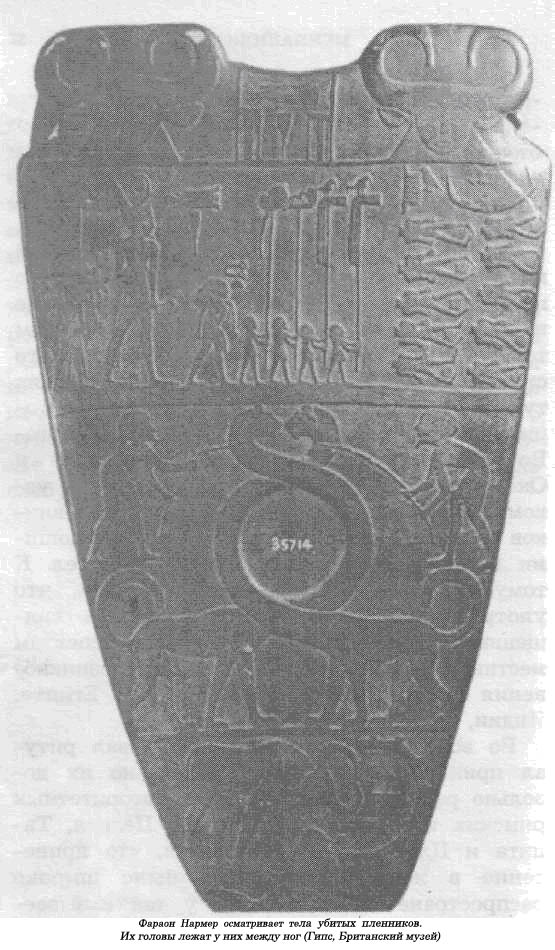

Агнец милосердия.
Хочу надеяться, что у читателя, ознакомившегося с первой главой моей книги, не сложилось впечатления, что принесение человеческих жертв и поедание пленников было распространенным явлением только среди американских индейцев. Всего сто или даже пятьдесят лет назад в сотнях туземных общин, раскинувшихся на территории Африки, к югу от Сахары, в Юго-Восточной Азии, Малайзии, Индонезии и Океании, существовал обычай, правда, в узком масштабе, принесения в жертву пленников и распределения между присутствующими на ритуале кусочков их мертвых тел. К тому же есть все основания считать, что употребление человеческой плоти на священных празднествах было важным аспектом местных традиционных культур до возникновения государств в Месопотамии, Египте, Индии, Китае или в Европе.
Во всех этих регионах существовал ритуал принесения в жертву людей, но их довольно редко съедали. В таких авторитетных римских источниках, как труды Цезаря, Тацита и Плутарха, утверждается, что принесение в жертву пленников было широко распространенной практикой у так называемых «варварских народов», живших на границах греко-римского мира. Греки и римляне периода поздней классической античности считали принесение любой человеческой жертвы делом аморальным и искренне негодовали по поводу того, что честные солдаты должны лишаться жизни ради культов, царивших у таких «нецивилизованных народов», как бритты, галлы, кельты и тевтоны. Во времена Гомера сами греки не чурались убийства небольшого числа пленников, чтобы умилостивить своих богов.
Во время Троянской войны, например, ее легендарный герой Ахилл бросил в погребальный костер своего соратника Патрокла двенадцать захваченных в плен троянцев. Позже, во время крупного морского сражения при Саламине в 480 году до н.э. между греками и персами, греческий командующий Фемистокл приказал принести в жертву трех захваченных накануне персов, чтобы обеспечить себе победу. Римляне тоже прибегали к человеческим жертвам. Около 226 года до н.э. они закопали заживо двух греков и двух галлов, чтобы не дать исполниться пророчеству о том, что в скором времени галлы с греками овладеют Римом. Подобные инциденты случались и позже, в 216 и 104 гг. до н.э. Даже вымуштрованные римские войска робели при первых столкновениях с кельтами, которые шли в бой, распевая магические гимны, и, сорвав с себя все одежды, совершенно голые устремлялись на римлян. Существование кельтского культа «отсеченной головы» еще в доримской Европе «железного века» наводит на мысль, что чернокожие и индейцы в современной Америке — не единственные наследники «охотников за черепами». Воины-кельты, бросив отрубленные головы своих врагов в боевые колесницы, везли их домой, где насаживали на высокие шесты. На юге Франции кельты демонстрировали черепа в специальных нишах, вырубленных в скальном монолите. Вражеские черепа украшали кельтские горные форты и главные ворота перед их городами и поселениями. Нам известно, что человеческие жертвоприношения играли важную роль в кельтском религиозном ритуале и эта процедура осуществлялась под присмотром особой касты жрецов, получившей название друидов. Кельты предпочитали сжигать людей на кострах, для чего изготовляли плетеные корзины из ивняка в рост человека, заталкивали в нее жертву и поджигали прутья. Иногда жертв потрошили, чтобы друиды по исходящим паром внутренностям могли предсказать будущее, или их закалывали кинжалом в спину и, после того как человек в страшной агонии умрет, по положению его скорченных членов жрецы проводили ту же процедуру. Геродот сообщает еще об одном знаменитом народе — «охотниках за черепами»: о скифах, живших в низовьях Дуная и на берегах Черного моря. Они регулярно приносили в жертву каждого сотого из захваченных на поле брани вражеских воинов.

Как утверждает профессор Игнас Гельб из Чикагского университета, пленников часто приносили в жертву в храмах. В табличке из Лагаша, составленной около 2500 года до н.э., говорится, что тысячи вражеских трупов обычно складывались в большие пирамиды. Захваченных в плен воинов часто приносили в жертву и в древнем Китае.
Библейский рассказ об Аврааме и его сыне Исааке указывает нам на принятие древними иудеями идеи человеческого жертвоприношения. Аврааму чудится, что он слышит, как Бог требует убить его сына, и он идет на такое убийство, и лишь в последний момент его руку с ножом отводит ангел. В жертву приносится запутавшийся в зарослях баран.
В ранних брахманских священных писаниях заметен все возрастающий интерес к человеческим жертвоприношениям. Их богиня смерти Кали удивительно похожа на кровожадных божеств ацтеков. В «Калика пурана» — «Священной книге Кали» — она представлена в виде ужасной, отвратительной женской фигуры, обвешанной гирляндами человеческих черепов, испачканная человеческой кровью, с черепом в одной руке и мечом в другой. В этой книге приводятся в мельчайших подробностях все тончайшие инструкции в отношении обряда предания людей ритуальной смерти.
Одной из самых стойких форм приношения человеческих жертв в государствах и империях древнего мира, по-видимому, следует считать массовое убийство на похоронах вождей и императоров их жен, слуг и телохранителей. Скифы, например, убивали всех царских поваров, конюхов и слуг. Умертвляли всех прекрасных холеных лошадей вместе с юными наездниками, чтобы они могли ездить на них в потустороннем мире. Следы принесения в жертву царских слуг были обнаружены в древних египетских гробницах в Абидосе и погребениях шумерских царей в Уре. Обряд принесения в жертву слуг преследовал двойную цель. Во-первых, правитель забирал с собой в могилу весь двор, чтобы и там сохранить тот стиль, к которому привык в этой жизни. Но за этим стояла и другая, куда более прозаическая причина. Непременная смерть его жен, слуг и телохранителей после его кончины вселяла уверенность в сюзерена, что его ближайшее окружение будет ценить его жизнь дороже своей и в таком случае ничто не угрожает его безопасности, никто не осмелится организовать заговор с целью его смещения с трона. В Китае в конце II тысячелетия до н.э., вероятно, было совершено множество таких человеческих жертвоприношений. Тысячи людей убивали на каждых похоронах императора. Такой практике, наравне с принесением в жертву пленников, был положен конец во время правления в стране династии Чу (1023—257 гг. до н.э.). При династии Чин живых людей и животных заменили глиняные изваяния. Когда в 210 году до н.э. скончался первый император объединенного Китая Чи-Ши-Гуань, по этому печальному случаю было изготовлено 6000 керамических статуй в натуральную величину его пехотинцев и кавалеристов на конях, которые были захоронены в подземелье размером с нынешнее футбольное поле, рядом с гробницей усопшего императора.
В таком беглом обзоре практики человеческих жертвоприношений в Старом Свете поражает одно — они очень редко сопровождались поеданием человеческой плоти. Мы не располагаем никакими, даже косвенными, доказательствами того, что существовала определенная государственная, жреческая или военная система, занимавшаяся распределением частиц человеческих тел при принесении людей в жертву. Павсаний Лидийский утверждает, что галлы под командованием Комбютиса и Орестория уничтожили все мужское население в Каллиасе, они пили их кровь и ели их плоть. Подобные обвинения выдвигались против татар и монголов, но такие сведения, скорее всего, лишь свидетельства обычных жестокостей на войне, а не этнографические описания ужасных каннибальских культов, которые, например, царили у ацтеков. Сообщения о случаях каннибализма в Египте, Индии, Китае обычно связываются либо с приготовлением экзотических блюд для пресыщенных представителей высшего общества, либо с наступлением голода, когда бедняки были просто вынуждены съедать друг друга. В Европе послеримского периода каннибализм считался тягчайшим преступлением и на него могли отважиться только ведьмы, оборотни и вампиры.
Возвращаясь снова к проблеме каннибализма, необходимо рассмотреть ее с точки зрения теории морального прогресса. Многим из нас гораздо приятнее считать, что ацтеки так и остались каннибалами из-за того, что их нравственность находилась на очень низком уровне и определялась инстинктами, а в странах Старого Света существовало строгое табу на употребление в пищу человеческой плоти, ибо там моральный уровень населения постоянно и неуклонно возрастал с прогрессом цивилизации. Думается, что такие представления можно объяснить либо провинциальным взглядом на многие вещи, либо откровенным лицемерием. Ни запрет на каннибализм в Старом Свете, ни снижение числа человеческих жертвоприношений в нем не оказали ни малейшего влияния на скорость, с которой государства и империи в этом мире уничтожали население друг друга. Всем известно, что количество войн с доисторических времен неуклонно росло и рекордное число жертв в результате возникших военных конфликтов как раз приходится на те страны, где главенствующей является религия христианства. Горы трупов, оставленные гнить на полях сражений, ничем не отличаются от расчлененных трупов для каннибалистских празднеств. Сегодня, когда еще вполне реальна угроза третьей мировой войны, нельзя свысока глядеть на примитивных ацтеков. В наш ядерный век мир выживает только потому, что каждая из враждующих сторон убеждена, что нравственные стандарты другой гораздо ниже, и она не позволит себе ответить ударом на первый удар. Но те, кто переживет ядерный кошмар, не смогут даже похоронить мертвых, не говоря уже о том, чтобы есть их.
Видится два условия, определяющих издержки или выгоды каннибализма на ранней стадии формирования государства. Прежде всего, это использование вражеских солдат в качестве производителей продуктов питания, а не в качестве источника мяса как такового. Игнас Гельб, говоря о государственной эволюции в Месопотамии, указывает, что вначале мужчин убивали либо на поле боя, либо во время ритуальных церемоний и лишь пленные женщины и дети пополняли армию рабского труда. Это говорило о том, что гораздо легче поддерживать порядок среди чужестранок и их детей, чем среди недисциплинированных пленников-мужчин. Но по мере роста могущества государственного аппарата военнопленных клеймили, связывали веревками и держали в колодках. Позже их, однако, освобождали, размещали на новых землях или даже использовали для особых надобностей правителей — например многие из них становились телохранителями, наемниками или же воинами в «летучих» отрядах.
Изменение статуса пленника — это главный фактор при создании второго по важности источника дешевой производительной рабочей силы в Месопотамии.
Гельб подчеркивает, что пленники в Месопотамии, Индии или Китае не были рабами, а скорее — более или менее свободными крестьянами, которых расселяли по территории всего государства. Таким государственным системам Старого Света было гораздо выгоднее использовать домашних животных для получения мяса и молока, чем плоти пленников. Сельскохозяйственные рабочие ценились куда выше «пушечного мяса». Домашние животные позволяли увеличить производство, существенно расширить производственную базу государств и империй Старого Света, достичь такого уровня экономики, который не снился древним ацтекам, во многом полагавшимся на каннибализм.
Второй аспект при подсчете издержек и выгод от каннибализма носит скорее политический, чем экономический характер, хотя в конечном итоге все сводится к поддержанию приемлемых условий жизни для все возрастающего населения, интенсификации производства и уменьшению экологического урона. Государства формировались из сельских общин в результате появления все большего числа способных руководителей, умело занимавшихся экономическим перераспределением, а также благодаря ведению локальных войн. Первые короли, такие, как Сигурд Щедрый, намеренно пропагандировали образ «великого кормильца», и подобным лозунгом «сильные мира сего» всегда подтверждали свое величие. Такая неслыханная щедрость в ситуации быстро растущего населения, ухудшения природных условий и среды обитания требовала вторжения на чужие территории, принятия в своих границах все большего числа крестьян. В таком случае поедание пленников означало бы лишь бездумное растранжиривание мужской силы, и это, конечно, было бы самой глупой стратегией для любого государства, имеющего имперские амбиции. Строительство империи нельзя облегчить обещанием, что тех, кто подчинится, «не съедят», а напротив, жизнь каждого человека только улучшится и его здоровье укрепится. Каннибализм и империя — две вещи несовместимые. Сколько раз на протяжении всей истории властители обманывали народы, пытаясь убедить их, что несправедливость при распределении громадных богатств в конечном итоге только способствует их благополучию. Но «великий кормилец» всегда воздерживался от таких заявлений, что, мол, нет особого различия между тем, кто ест, и тем, кого едят. Идея создания каннибалистского государства — это идея вечных войн с соседями, в которых людей рассматривают не иначе, как «ходячее» мясо, пригодное для вкусной похлебки. Такой выбор сделало только одно государство — государство ацтеков, но в результате оно так и не смогло достичь имперского величия и разрушилось при встрече с незнакомой цивилизацией.
Следует указать еще на одну причину проявления милосердия по отношению к пленникам. Рост могущества империй заставлял видеть в ее правителях почти божественных лиц, которые защищают слабых от злоупотреблений со стороны представителей правящего класса. «Великого кормильца» все чаще представляли как великого праведника, поборника правосудия, милосердия и защитника слабых. В этом суть всех универсальных религий в Старом Свете, религий, прославляющих любовь и милосердие. В первом известном нам законодательстве, появившемся за 1700 лет до рождества Христова, царь Вавилонии Хаммурапи провозгласил защиту слабых и угнетенных основополагающим принципом своей империи. Он называл себя «великим кормильцем», «пастырем», «распределителем несметных богатств», «гарантом полных закромов» и, наконец, «богом Солнца Вавилонии, который рождает свет над его царством». Он к тому же еще «великий защитник», «разрушитель зла», «великий судья», не позволяющий сильным обижать слабого.
Точно такой же политический расчет лежит и в основе политической религии, известной нам как конфуцианство. У первых китайских императоров существовал «мозговой трест» при дворе, который разрабатывал для правителя стратегию и тактику, как ему остаться богатым и могущественным государственным деятелем и сохранить при этом за собой трон. Самыми известными советниками были Конфуций и Менций, которые без устали поучали своих повелителей, что нужно хорошо кормить свой народ, не облагать его непосильными налогами — только в этом путь к процветанию государства. Менций пошел еще дальше, заявив, что личность императора сама по себе ничего не представляет. Только тот император, который хорошо относится к народу, способен долго усидеть на троне. Так развивалась религиозная доктрина любви, милосердия и самопожертвования. У благожелательного человека нет врагов, утверждал Менций.